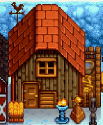
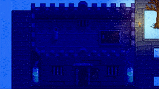

Random Events
- See also: Secrets.
Random Farm Events happen overnight when the player sleeps.
Farm events
One farm event is randomly selected each night. An event is always selected (except if there's a wedding), but it might have extra requirements that make it do nothing; in that case, it still prevents other events from triggering. The event is chosen in the order listed below.
Farm events can still be chosen while sleeping in the Island Farmhouse, or in a Tent Kit anywhere, but will always affect the mainland farm.
Nothing
No event happens on the night before a wedding, or if another event is selected below but does nothing.
Earthquake
An earthquake on the 3rd day of Summer Year 1 unlocks the railroad area.
Leo Moved
The night after seeing Leo's 6 heart event, parrots build him a treehouse in the tree to the west of Linus' tent.
Bundle Completion
An event is shown for completing a Community Center or Joja bundle.
Abandoned JojaMart
On the first rainy night after completing the Community Center, lightning strikes the abandoned JojaMart, allowing access to the Missing Bundle.
Boat Repair
The night after providing all the materials for the repair of Willy's Boat, Robin and Willy can be seen working on it.
Golden Parrot
The night after paying the Golden Joja Parrot, Golden Parrots can be seen collecting the missing Walnuts.
Strong Wind Storm
A strong wind storm blows the Big Tree in Cindersap Forest down and replaces it with the Giant Stump. The quest has a 10% chance to trigger each night after the Greenhouse construction. The stump may then be interacted with to begin the "The Giant Stump" quest.
Mystery Boxes
On Summer 22, year 1 or after collecting the second Prize Ticket from the Billboard, there is a cutscene with Mr. Qi in a plane after which Mystery Boxes can be found.
The Crop Fairy
Except in winter or on the last day of a season, there's a 1% chance of the fairy event being chosen. If there is a fully grown Fairy Rose anywhere this is increased to 1.7%. If it's not raining, the event chooses a random crop that's not from Wild Seeds and not fully-grown or dead. The crop fairy fully grows all crops in a 5x5 area around the selected crop, so they're ready to harvest.
Although the center crop can't be from Wild Seeds, one of the surrounding crops can be; in that case, they will reach the "fully grown" stage but not be replaced by a forageable. Harvesting them in this state gives a Wild Horseradish, Spice Berry, Common Mushroom, or Winter Root corresponding to the season. If they are left overnight, they will be replaced by random forageables from the season.
If it's raining or no crop was found, the event does nothing.
The Witch
There's a 1% chance of the witch event being chosen. The event randomly chooses one coop (each with an 80% chance if it's been upgraded at least once, and has fewer than 50 placed objects), or one Slime Hutch (each with a 50% chance if it contains at least one slime or other NPC, and has no Wicked Statue). If one of the following buildings were not selected, the event does nothing.
The witch flies over the selected building.
- If a coop was selected, she leaves a Void Egg that can be incubated into a Void Chicken.
- If 100% Perfection has been reached, there is a 60% chance that a gold witch will instead appear and leave a Golden Egg that can be incubated into a Golden Chicken.
- If a slime hutch was selected, she turns any slimes inside into black slimes.
In late-game, the Witch's Hut can be visited, but the witch is never present.
 The witch flying over a coop. |
 The witch flying over a pre 1.6 slime hutch. |
Meteorite
There's a 1% chance of the meteorite event being chosen. The event chooses a random 3x3 area on the Farm and checks whether it contains any water, placed objects that block movement, buildings, or resource clumps. If it does, the event does nothing. Otherwise, the meteorite will spawn in the lower left 2x2 square within this area.
A unique Meteorite sound effect plays and a meteorite appears the next day on the farm in the selected area. Any crops or paths in that area are destroyed. This can be counter-productive, especially if the crops being grown are of more value than the loot from the meteorite. Before the shipping screen is displayed, a message is shown saying "An explosion was heard in the night..."
Meteorites don't despawn naturally and require a Gold Pickaxe or better to mine. (A Gold Pickaxe requires 7 hits, and an Iridium Pickaxe requires 6 hits.) They drop 10 Iridium Ore, 8 Stone, and 2 Omni Geodes, and have a 25% chance to drop a Prismatic Shard.
Trivia: From v1.0 to v1.04 of the game (i.e., from February 26, 2016 to March 1, 2016), the meteorite was gray with no spiky projections.
Stone Owl
There's a 0.5% chance of the stone owl event being chosen. The event tries 50 times to pick a random tile on the Farm which is clear to allow item placement.
An owl sound effect plays, and a unique Stone Owl appears on the chosen tile. This owl is unrelated to the Stone Owl sold at the Night Market.
The description reads: "It's not clear where this came from, but it looks very fine."
If no tile allowing item placement is found, this event does nothing.
Strange Capsule
After Year 1, there's a 0.8% chance of the strange capsule event being chosen. The event tries 50 times to pick a random tile on the Farm which is clear and allows item placement. Before the shipping screen is displayed, a message is shown saying "A strange sound was heard in the night..."
A unique UFO sound effect plays, and a Strange Capsule appears on a random tile of the farm.[1] The strange capsule can be picked up and placed around the farm. It will emit a small amount of light when placed. It turns into a broken Empty Capsule after about three days (unless it is stored in a chest or inside of the player's inventory), which enables a further Easter egg. It can also turn into a broken Empty Capsule if applied with Fairy Dust. Once this event has happened in a save file, it cannot happen again.
If no tile allowing item placement is found, this event does nothing, but still cannot happen again.
Personal events
If no farm event was selected from the above list (regardless of whether the event did something), the game chooses from one of these events instead.
Child is Born or Delivered
- See also: Children
This event is chosen if the player agreed to have a child 14 days ago in the spouse asks for a child event. The child appears in the farmhouse crib the next day.
Bug: if another event is selected above, the child is never born or delivered.
Spouse asks for a child
If married to an NPC:
- This event has a 5% chance of being chosen if the player has been married for at least 7 days, sleeping at home, have at least 10 hearts with their spouse, have the nursery upgrade, have not removed the crib, aren't already having a child, and have no children or one child at the toddler age.
- The player's spouse asks them if they want a child. If agreed to, the child is born or delivered after 14 days.
If married to another player:
- This event has a 5% chance of being chosen if the player is sleeping at an eligible home and aren't already having a child. A home is eligible for children if it's owned by one of the married players, has the nursery upgrade, and doesn't already have two children.
- One player is randomly chosen to propose having children; if both players accept, the child is born or delivered after 14 days.
In either case, the player can safely decline without repercussions; the event will be rechecked on later nights with the same conditions. See Marriage, Children, and Multiplayer#Marriage for more info.
Farm animal birth
- See also: Animals
There's a 50% chance the farm animal birth is selected. The event randomly chooses one upgraded Barn that isn't full (each with a chance equal to 0.55% * number of animals inside, e.g., 1.65% for three animals), then one random animal in that building. If no building is selected or the animal can't give birth (e.g., it's a baby or pregnancy is disabled for that animal), the event does nothing.
The selected farm animal in the barn gives birth. A message is shown asking the player to name them.
Wild animal attack
- See also: Animals
This event is guaranteed to be chosen if no other event was, but has a 50% chance of doing nothing. The event randomly chooses one barn or coop whose door is closed with some animals outdoors (each with a chance equal to 1 / number of buildings, e.g., 100% for one building and 50% for two).
A unique sound of dogs plays, and one animal left outside of the selected building disappears permanently. All other animals show a message indicating "Something bad happened last night.", but are otherwise unaffected.
History
- 1.5: Fixed spawn requirements for the random Stone Owl and Strange Capsule night events, making them much less rare.[2] There is a new Strange Capsule secret.
- 1.5.3: The Strange Capsule now only spawns once per game. Made the Stone Owl rarer and touched up the sprite.
- 1.6: Added Strong Wind Storm random event. Changed Meteorite drops: added a Prismatic Shard, increased Iridium Ore from 6 to 10, increased Stone from 6 to 8, and replaced Geodes with Omni Geodes. Rebalanced the crop fairy event: the chance no longer depends on the number of planted crops, it can no longer happen on the last day of the season, and it can no longer choose dead crops to grow. It is also now more likely with a fully grown Fairy Rose. Some overnight events that play sound now show a speaker icon on the lower left of the screen.
- 1.6.3: Reduced rate of the Meteorite dropping a Prismatic Shard from 100% to 25%.
References
- ↑ See SoundInTheNightEvent::SetUp in the game code.
- ↑ From ConcernedApe on Twitter: "the spawning requirements were changed in 1.5... it used to be essentially impossible for them to spawn because of a mistake in the code"
Twitter link: https://twitter.com/ConcernedApe/status/1341861745380356097
Archive link: https://archive.ph/3WwWa